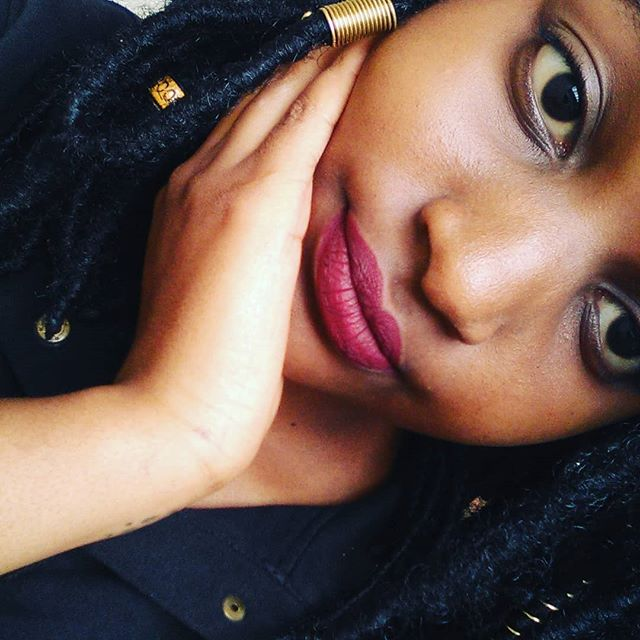

Cheryl Muli
Hi I am Muli Cheryl Wanja.I am nineteen years old. I was born on September the twenty sixth date nineteen ninety nine. I am a firstborn to a family of five. Just like any other teenage girl I like music. I am from Kariobangi South this is nearby Buruburu. I have a single parent who is my mum. Her name is Christine Mwongeli.

My siblings names
- Priscah Mutanu
- Walter Mumo
- Trevor Muange
- Elizabeth Mwikali
About Me
Hello again! I am Cheryl Wanja. So about me I am nineteen a free spirit. I have big eyes and wear glasses. I am 5'2 in height and weigh about 60 kilos.I live in Nairobi. I love coffee and taking late night walks. I am a lover of art name it all poems paintings novels and food. Food is art too in my opinion.
Education
I started school at a really young age. of two and a half. It was a challenging experience as in all my classes I was always the young onE. Anyways I started my studies at GoodDay Preparatory. After that I joined Dayspring Junior school in Kariobangi South and did my class one through five.After that I was taken to Saint Joseph's Boarding School in Machakos.Here i spent three years and gathered a few certificates including
my KCPE in 2012.Later I joined Kathiani Girls High School. I did the required time and fineshed and i had my certificate. I joined Chuka University for a diploma course and graduated.Then I just recently Moringa School for a course in Software Engineering.We can say that I am a junior developer
Skills
Through out the years i've done odd jobs. Right after high school I joined an acting company by the name Goal Achievers Production. I was there from Late February till Early August
I have helped my mother in her beauty shop when i was out of school for holidays.
Projects I Have Done